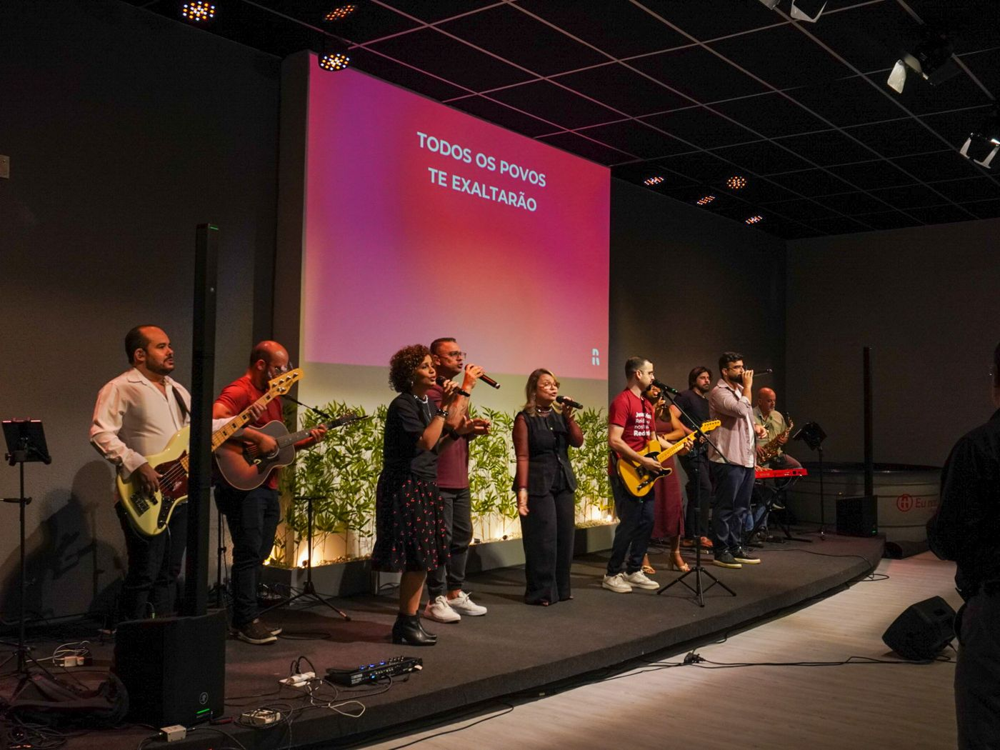

Uma igreja plantada no Recife em Nov, 2023
Cristo no centro. Gente perto. Portas abertas.
Somos uma comunidade de fé fiel às Escrituras, que cresce em comunhão e existe para fazer discípulos em nossa cidade. Será uma alegria recebê-lo.

Primeira vez?
O que esperar de um domingo conosco
Somos uma igreja de cerca de 110 membros, o que nos permite conhecer e acolher cada pessoa que nos visita.
9h · Escola Bíblica
Iniciamos o domingo com o estudo das Escrituras, reunindo toda a igreja no templo. No mesmo horário, as crianças participam da EBD Kids, ministrada em português e inglês.
10h e 17h · Cultos
Momentos de louvor, oração e pregação da Palavra, fiel ao texto bíblico e aplicada à vida. Cada culto tem duração aproximada de duas horas.
Redenção Kids
As crianças são acolhidas em salas organizadas por faixa etária:
Chegando
Há vagas para estacionamento na própria Av. Prof. José dos Anjos. Para quem vem de ônibus, a parada mais próxima fica na Avenida Norte, em frente ao Nexos Hotel Tamarineira.
Se desejar ser recebido por alguém de nossa equipe, envie-nos uma mensagem informando sua visita.
Informar minha visitaQuem somos
Uma igreja jovem, com raízes antigas
Somos uma comunidade de fé cristocêntrica, fiel às Escrituras como única regra de fé e prática, dinâmica, relacional, missionária, discipuladora, relevante e contemporânea.
Alcançar pessoas que não conhecem a Cristo, batizando e ensinando a guardar tudo quanto Cristo ordenou, e discipular aqueles que já entregaram suas vidas ao Salvador.
Cristocêntrica
Jesus é o centro da pregação, do louvor e da vida comum.
Fiel às Escrituras
A Bíblia é a nossa única regra de fé e prática.
Dinâmica
Uma igreja em movimento, aberta a crescer e se ajustar à missão.
Relacional
A fé é vivida em casa, à mesa, nos pequenos grupos.
Missionária
Existimos para anunciar Cristo no Recife e além.
Discipuladora
Uns ajudando os outros a seguir Jesus de perto.
Relevante
Presentes e úteis na vida da cidade.
Contemporânea
A fé de sempre, falada na linguagem de hoje.
Nossa igreja
A vida da Redenção em imagens
Pequenos grupos discipuladores
Quer fazer parte de um PGD?
Nos PGDs, a vida da igreja continua ao longo da semana: estudamos a Bíblia, oramos e caminhamos juntos no discipulado. O endereço dos grupos que se reúnem em residências é informado mediante contato.
Rosarinho
Misto · 19h30Na igreja
Misto · 19hJovens · 19hEspinheiro
Misto · 19hBoa Viagem
Misto · 19h30Mensagens
Ouça e assista onde estiver
As pregações de domingo ficam no YouTube e viram podcast no Spotify.
Contribua
Dízimos e ofertas
Como igreja em plantação, cada contribuição sustenta o trabalho e a missão no Recife. [Uma frase sobre como os recursos são usados.]
Fale conosco
Pedido de oração ou uma conversa
Para agendar sua visita, participar de um PGD ou conversar com um de nossos pastores, entre em contato.